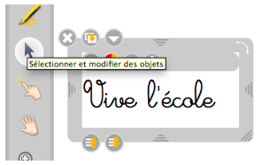

Il est désormais possible d'ajouter des actions sur des objets (lien hypertexte, lien sur une autre page, jouer un son). Cette option se trouve dans le menu du cadre de l'objet


Pour retirer l'action, il suffit de repasser par ce même menu.
N'oubliez pas d'utiliser Interagir avec les objets pour jouer ensuite l'action.
